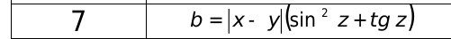
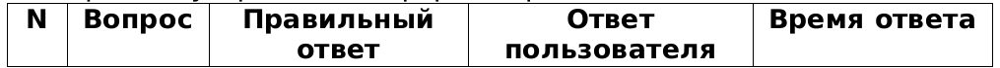

Лабораторная работа №5
Гуценков Никита. Вариант 7
Задание 1 (ничем не отличается от ЛР1)
В соответствии с вариантом написать JavaScript для вычисления значения функции. Ввод/вывод исходных данных
осуществляется через диалоговые окна.

Задание 2
Переработать скрипт разработанный в задании 1 для вывода исходных данных и результатов в динамически
сформированный HTML документ. При динамическом формировании HTML документа обязательно использовать теги.
Результаты оформить презентабельно.
Задание 3
Разработать скрипт для проведения тестирования. Скрипт должен реализовывать следующую последовательность
действий:
1.Задать вопрос о желании пройти тест (через диалоговое окно);
2.В случае согласия необходимо ввести следующие данные: ФИО, возраст, пол.
3.Циклически задать не менее 10 вопросов с 4 вариантами ответов (через диалоговое окно). Результаты ответов
вводятся либо числом 1-4, либо буквой A-D.
4.По окончанию опроса сформировать HTML документ следующего содержания: заголовок – название теста, ФИО,
возраст, пол тестируемого, результаты тестов виде таблицы заданного вида, правильные и неправильные ответы
оформить по разному (фон, цвет, форматирование).
5.Так же должны быть получены ответы на следующие вопросы:
1.Список вопросов с правильным ответом;
2.Список вопросов с неверным ответом;
3.Вопрос, на который было затрачено более всего времени;
4.Среднее время ответа на вопрос;
5.Процент правильных ответов;
6.Процент неправильных ответов;
7.Вопросы, на которые было затрачено времени более порогового значения.
